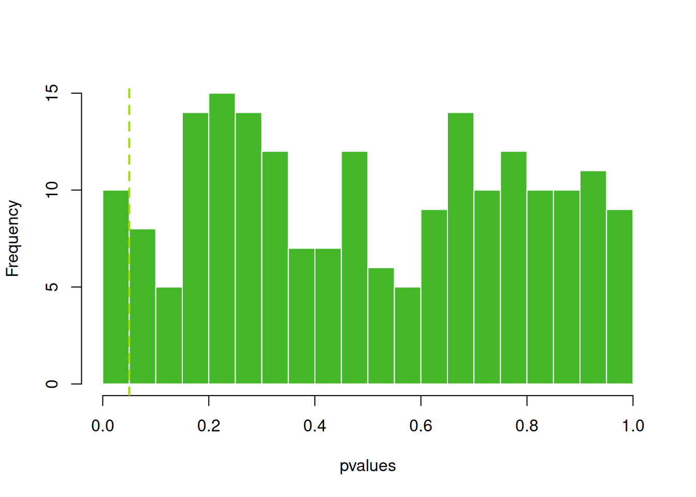
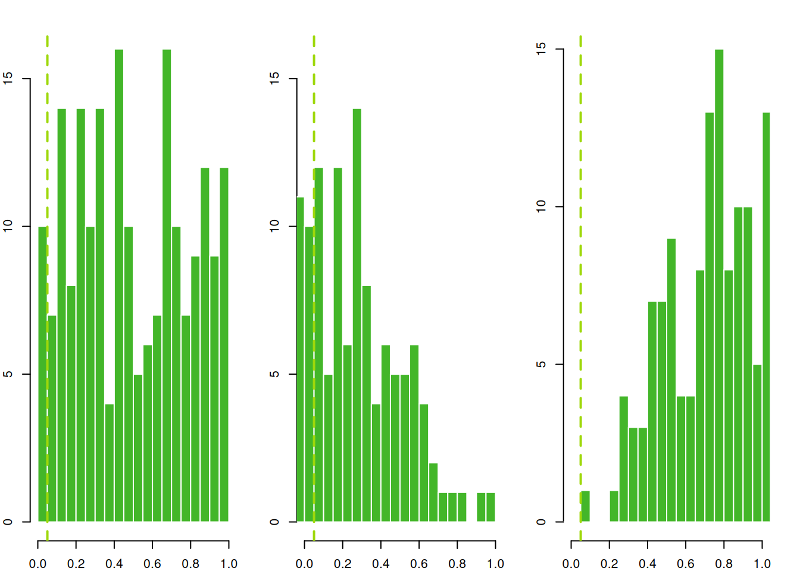

Imagine that we are interested in a lot of things, so we do a lot of statistical tests. However, remember that the definition of a p value is that it is the likelihood of observing our data if the null hypothesis is true (a type I error). If we do a lot of statistical tests, we increase our chances of observing data that looks unlikely to fit the null even if the null hypothesis is true.
The code below demonstrates the problem. The doExp() function samples 100 random numbers from a uniform distribution to generate data for an explanatory variable and another 100 random numbers from a uniform distribution to generate data for a response variable. Then it fits a linear model testing if the explanatory variable predicts the response variable. We know, from the code, that the null hypothesis should be true – there should be no relationship between these two variables.
However, let’s look at the distribution of p values when we run the doExp() function 200 times
set.seed(830)doExp <-function(i){ myX <-runif(100) #sample 100 random numbers myY <-runif(100) #sample 100 random numbers myModel =lm(myY ~ myX) #fit linear model myP =summary(myModel)$coefficients[2,4] #get p valuereturn(myP)}nTests=200myPValues <-sapply(1:nTests, doExp) ## run doExp 200 timeshist(myPValues, col =palette()[4], border="white", main="", xlab ="pvalues", breaks=20)abline(v=0.05, col=palette()[2], lwd=2,lty=2)

Ten out of our 200 samples had significant p values for the relationship between our explanatory and response variables, even though these variables were generated from independent processes. This is not just bad luck – it is exactly what is expected for a p value cut off of 0.05! Five percent of the time, we saw a pattern indicating that the explanatory and response variables were related to each other, even though the null hypothesis was true.
8.2 “Correcting” for multiple testing
If a specific analysis or set of analyses does a large number of statistical tests, then there is a larger chance of a Type I error or false positive. The statistical term for the chance of detecting one or more false positives across multiple tests is the family-wise error rate. There are a number of approaches that scientists use to try to account for this inflated false positive rate.
8.2.1 Bonferroni correction
The Bonferroni correction divides the \(\alpha\) value by the number of tests conducted to adjust for the increase in the family-wise error rate that you get by doing multiple tests. So if you’re conducting 10 statistical tests with an \(\alpha\) of 0.05, with a Bonferroni correction you need \(p < 0.005\) to determine significance.
In our example from before, we conducted 200 test with an \(\alpha\) value of 0.05. A Bonferroni correction would require a p value of 0.00025 to be considered significant. The code below checks if any of the p values from the simulations are below the Bonferroni-corrected threshold.
newAlpha =0.05/nTestssum(myPValues < newAlpha)
[1] 0
None of them are. Hooray, have we solved the problem?
Some benefits of the Bonferroni correction: - You can use it to combine all different types of tests into one family-wide error rate control, as long as they use p values. - It’s very easy to use.
However, the Bonferroni correction has a big problem: it very strongly reduces statistical power to detect true associations, essentially increasing rates of type II error or false negatives. My own PhD advisor would say “never disrespect your data by using a Bonferroni correction”.
One thing that helps me think through concerns with the Bonferroni is that no matter what your distribution of p values, the Bonferroni is the same. However, in reality, our own expectations of the underlying false positive and false negative rate my change depending on whether the distribution of p values is flat, right skewed, or left skewed as in Figure 8.1.

Figure 8.1: Three potential p value distributions that could result from 200 tests.
8.2.2 False discovery rate
8.3 When do you need to correct?
Data exploration vs. conclusively establishing effects